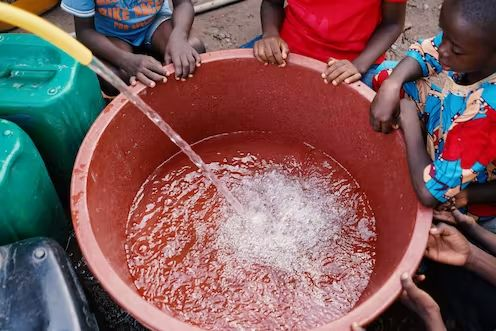

Community dialogue can show the way to meeting water needs: a South African case
Jennifer Hove, Kathleen Kahn, Lucia D’Ambruoso and Rhian Twine. Evidence suggests that involving marginalised communities in setting priorities and designing collective action can lead to improved health outcomes.